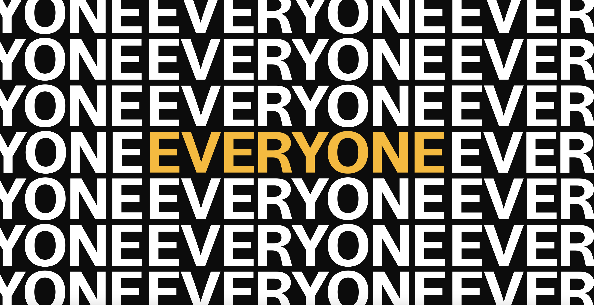
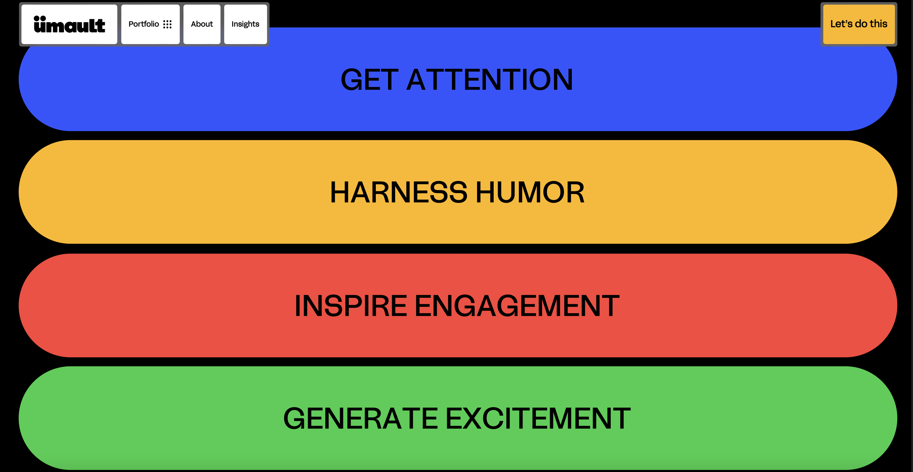
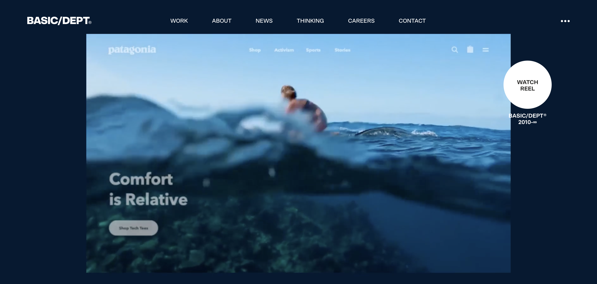
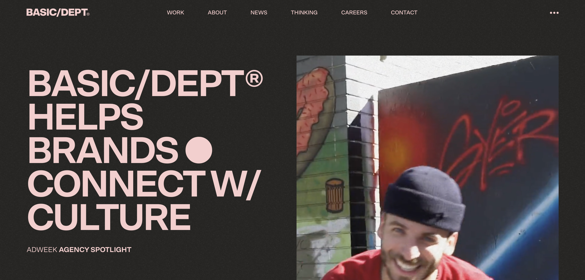
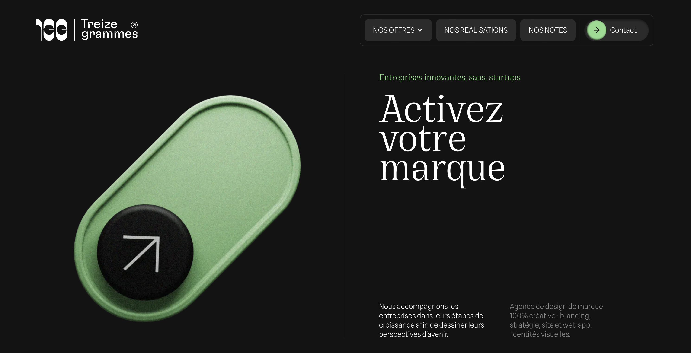
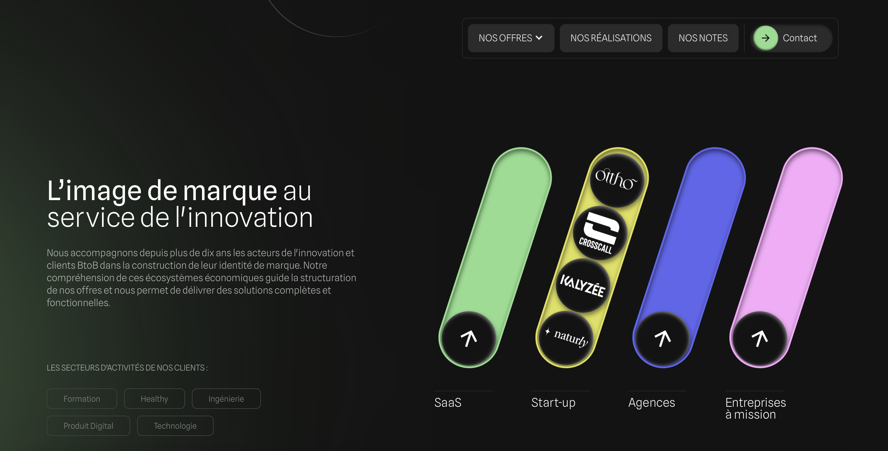

UMAULT
https://www.umault.com
I chose this page because it immediately captured my attention and sparked my curiosity to explore further. The page features a horizontal layout on the landing page, transitioning smoothly from horizontal to vertical scrolling as you navigate. This dynamic movement creates an immersive user experience.
Instead of a traditional menu structure, the navigation utilizes visual and interactive elements to guide users through different sections. The color palette is predominantly neutral, with black and white tones, while vibrant colors like blue, yellow, green, and red highlight important information. This color contrast enhances readability while maintaining a professional look.
The site employs a sans-serif font, giving it a modern and professional appearance, with a clear typographic hierarchy defined by large headings and adequately sized paragraphs for easy reading. The effective use of white space prevents the layout from feeling crowded, despite the abundance of information. Notably, the interactions and animations draw particular attention. Animations activate as users scroll, appearing on the sides or disappearing, encouraging further navigation and adding originality to the experience.
Overall, the Umault site exemplifies modern web design, leveraging interactive animations to enhance user engagement. Its unique scrolling techniques, effective color use, and clear typography contribute to a fluid and visually appealing experience.


BASIC DEPT
https://www.basicagency.com
I chose this page because it immediately caught my attention with an engaging video and an interactive circle that synchronized with my mouse movements. This feature piqued my curiosity, prompting me to explore further. The website's overall structure emphasizes clarity and simplicity, with sections like "Jobs," "About," and "Services" clearly defined.
Visually, the design employs a neutral color palette, accented by vibrant pink, which highlights important areas effectively. The color transitions are smooth and visually pleasing. The typography, presented entirely in capital letters, contributes to a modern and clear aesthetic.
Additionally, the scrolling effects are noteworthy; Basic Agency is recognized for its skillful use of animation to engage users and enhance navigation. The background video, paired with the mouse-responsive circle, adds an interactive element that captures attention from the outset. The page also features an animated noise background that adds depth. High-quality images are used throughout, accompanied by brief descriptions that showcase each project's accomplishments.
Overall, this page stands out for its effective blend of clarity, interactivity, and animation, creating an engaging user experience.


TREIZE GRAMMES
https://www.13g.fr
I have chosen this website, because in my opinion it is one of the best websites I have seen and I want to comment and analyze it.
To begin with, what has caught my attention of the main structure, is that when I opened the page I was presented with an initial screen that presents a carousel of various vibrant colors that attract a lot of attention, and this visual introduction immediately captures the user's attention and sets a dynamic tone. The rest of the overall structure of the site is very clean and makes it easy to navigate.
Regarding the visual design and animations on the page, I think they are quite modern and I liked them a lot, especially the playfulness of the “play” buttons found throughout the page. At the top of the page you are greeted by a giant button that contains an animation when you scroll the page. There are also small buttons that when you click on them, a kind of circle appears with information inside that I find very original. And finally, there are other buttons that when you slide the computer mouse, these buttons appear with colors.
All this creates a sense of surprise and dynamism that I don't usually see in other websites I have visited. On the other hand, I quite like the color palette used, as it has a black background with a gradient, which makes it look very professional, and throughout the page, some icons appear with colors, which match the images that are throughout the page.
As a conclusion of this page, I take it that it is a very careful page and that every detail is made with an intention, and the whole of the page makes it very attractive to see.


I STUDIO
https://www.i-studio.co.jp
I chose this page because of its clean and well-structured layout, and I also liked the animations on it.
Analyzing its general structure, I like the main video that appears as soon as the page opens, as it is a very visually balanced and carefully designed presentation. In my opinion, the distribution of information is quite intuitive and allows users to explore the content easily.
The visual design is modern and aesthetically pleasing, highlighted by the vibrant and harmonious color scheme, as this brand not only uses this color scheme because it is visually appealing, but it also reinforces the brand identity.
The images and graphic elements are selected and presented in a way that complements the overall aesthetics, creating a professional and attractive environment, away from looking overloaded. In addition, the distribution of content is careful and organized, allowing information to appear gradually as the user scrolls down.
Regarding interactivity and animations, the most outstanding features are the animations of the colored circles. These elements are not only pleasing to the eye, but also add a level of dynamism to the site. As the user navigates the page, the circle animations create a sense of fluidity and energy, making for an immersive browsing experience.
All in all, I conclude that this page is an example of how design can enhance the user experience. With its pleasing animations, harmonious color scheme and careful presentation of information, it manages to capture users' attention and offer a pleasant and effective browsing experience.